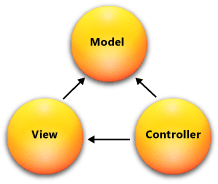
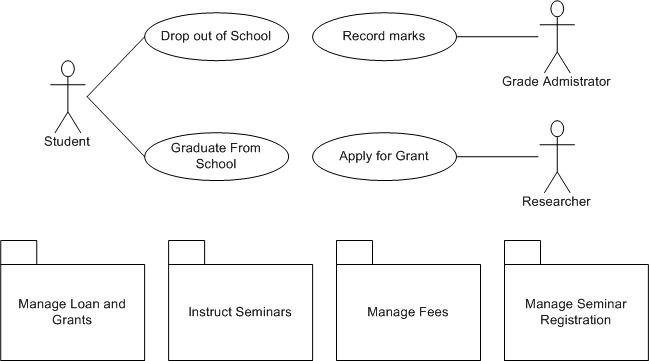

-

 WEB APP DEVELOPMENT
I have taken several courses in Web Application Development including: Front-End Engineering, Rails Development, Web Application Security, Java Servlet Development, and Distributed Application Development.
WEB APP DEVELOPMENT
I have taken several courses in Web Application Development including: Front-End Engineering, Rails Development, Web Application Security, Java Servlet Development, and Distributed Application Development.
I am comfortable working with HTML, CSS, Javascript, Prototype, Jquery, Ruby on Rails, PHP, Zend Framework, Java Servlets and JSP.
Additionally, I am very familiar with the MVC architecture.
images/CMUConnect.png VIEW A CASE STUDY
VIEW A CASE STUDY
During my Junior Year, I worked with Salim Peshawaria, Sean Chin and Jonghyun Thom to develop a video-chat web application, called CMUConnect, for members of the CMU Community. The inspiration behind this project was to allow students to engage in random social interactions through video chat and make new friends.
We entered the annual Carnegie Mellon research competition and won 2nd Place in the Alcoa Competition and 3rd Place in the Johnson & Johnson Competition. -

 DATABASE DESIGN
I have taken several courses in Database Design and am familiar with designing using 3NF. I used MySQL, PostGresSQL and SQLite to implement back-end databases for different project appliactions.
DATABASE DESIGN
I have taken several courses in Database Design and am familiar with designing using 3NF. I used MySQL, PostGresSQL and SQLite to implement back-end databases for different project appliactions.
-
 PROGRAMMING
Throughout my semesters at Carnegie Mellon, I have taken a variety of programming courses including: Intro to Programming, Data Structures, Algorithms, Functional Programming, C & Unix, Computer Systems and others. These courses have taught me a wide range of programming concepts, including things like OO Development, FP, Concurrency, Networking Protocols and Machine Programming.
PROGRAMMING
Throughout my semesters at Carnegie Mellon, I have taken a variety of programming courses including: Intro to Programming, Data Structures, Algorithms, Functional Programming, C & Unix, Computer Systems and others. These courses have taught me a wide range of programming concepts, including things like OO Development, FP, Concurrency, Networking Protocols and Machine Programming.
I am comfortable programming in Java, C, Ruby, Perl, Bash, working in Unix environments, and using the Eclipse IDE.
images/chess.jpg VIEW A CASE STUDY
VIEW A CASE STUDY
One of my class projects in 15-211: Fundamental Algorithms was to write a Chess AI in Java. Using the Alpha-Beta pruning Algorithm, I was able to create a program that could make intelligent moves in a short amount of time. The program was able to beat me consistently! -

BUSINESS
I have taken several business courses such as Software Systems Management, Data Analytics, Principles of Economics, Technology-based Entrepreneurship and Writing for Professionals.
I am familiar with different business-technology concepts and tools such as Scrum, BPMN, Sequence Diagrams, Domain Modeling, ERDs, Use-Case Diagrams, Robustness Diagrams and the SDLC.
VIEW A CASE STUDY
In the course 70-414: Technology-Based Entreprenuership, I participated in a project to come up with an idea and make as much money as possible within one month. I worked with a team of five students to offer a freelance web development service to local Pittsburgh Companies that needed a website. Our team was able to win the competition, and reap the benefits.